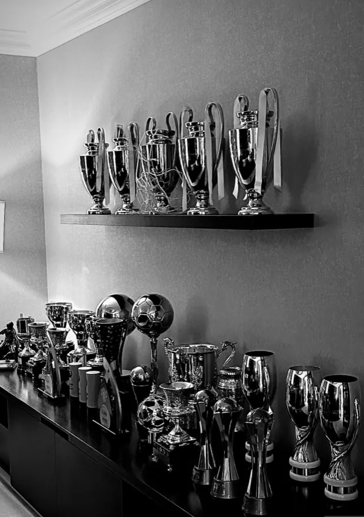

Hi! I'm Alex Njugi.
I'm a software engineer with a knack for
problem-solving who loves building
creative and efficient solutions that help
users and brands enhance their digital
experience.
About
I Love My Family !
I'm a software engineer passionate about crafting efficient and user-friendly solutions. My
journey in tech began at Moringa School, where I honed my coding skills and developed
a strong problem-solving mindset. I enjoy working on projects that challenge me and push
me to grow as a developer.
Beyond coding, I have a deep love for football and keeping fit. Staying active is important
to me, whether it's on the pitch or in the gym. I believe physical fitness not only keeps me
healthy but also sharpens my focus and discipline in all aspects of life.
Faith is a big part of who I am, and I take pride in serving as a mass server at my church.
It gives me a sense of purpose and fulfillment, allowing me to contribute to my community
in a meaningful way. Spending time with family and friends is equally important to me,
as they provide support, laughter, and great memories. I am also a loving son, blessed
with caring parents, and a brother to three beautiful sisters whom I deeply cherish.Apart
from that, I am an uncle to a wonderful niece who brings so much joy into my life.
I also enjoy unwinding with video games and good music. Whether it's an intense gaming
session or just vibing to chill music, these moments help me relax and recharge. I love
attending parties and social gatherings, meeting new people, and creating unforgettable
experiences.
Life is all about balance, and I believe in making the most of every moment. Whether it's
through coding, sports, faith, or fun activities, I strive to enjoy life to the fullest. I'm always
open to new opportunities, exciting projects, and collaborations that allow me to grow both
professionally and personally.
Achievements
Always A Winner !
I am a proud graduate of Juja Preparatory and Senior School, where I attained a C+ overall
and an A in English. This achievement not only reflects my dedication to academics but
also granted me the opportunity to pursue higher education at the university level. Excelling
in English has enhanced my analytical and communication skills, which are crucial in both
software development and leadership.
Beyond academics, I have taken on leadership roles that shaped my sense of responsibility
and teamwork. I served as the Dining Hall Captain, ensuring order and efficiency in school
operations, and was honored to lead as the Chairperson of Mass Servers, where I guided
others in serving the church and community. These roles strengthened my leadership
abilities, discipline, and ability to work well with others.
I am also a certified St. John Ambulance First Aid Giver and Sergeant, trained to handle
emergencies with skill and composure. This certification has allowed me to assist in critical
situations, emphasizing my dedication to helping others and ensuring safety. This experience
has also reinforced my ability to stay calm under pressure, an essential skill in both
emergency response and problem-solving in the tech industry.
Athletics has played a major role in shaping my discipline and resilience. I have won several
medals in athletic competitions, showcasing my commitment to continuous improvement
and excellence. Additionally, my passion for football has earned me multiple awards,
reflecting my teamwork, strategy, and sportsmanship. Engaging in sports has taught me
valuable lessons in perseverance, adaptability, and working towards a common goal.
Balancing academics, leadership, service, and sports has helped me become a well-rounded
individual. I take pride in my ability to manage responsibilities while making time for
family, friends, and personal growth. These achievements fuel my ambition, and I am always
eager to take on new challenges, expand my skills, and create meaningful connections in
both my professional and personal life.
Education

Enjoy Reading !
My educational journey began at St. Teresia Nursery School, where I took my first steps into
structured learning. It was here that I developed the foundational skills that would shape my
curiosity and love for knowledge. As I progressed to Laureate School, I built a strong academic
base, learning the importance of discipline, determination, and a passion for continuous growth.
These early years instilled in me the confidence and adaptability needed to take on greater
challenges in my academic path.
At Juja Preparatory and Senior School, I embraced both academic and personal growth, striving
to excel in my studies while developing leadership qualities. My C+ overall and an A in English
were a testament to my hard work and commitment to learning. Achieving this milestone granted
me the eligibility to pursue higher education, opening doors to greater opportunities in my
academic and professional future.
Currently, I am honing my technical skills at Moringa School, where I am specializing in software
engineering. This intensive and hands-on program has equipped me with practical coding skills,
problem-solving techniques, and a deep understanding of web development. The fast-paced and
industry-driven curriculum has strengthened my ability to think critically and innovate in the
field of technology.
As I continue to advance in my studies, my next goal is to join USIU University to pursue a
degree in computer science. I am eager to expand my expertise in software development,
artificial intelligence, and emerging technologies. My vision is to not only master the technical
aspects of computing but also to develop solutions that have a real-world impact.
Education has been the cornerstone of my ambitions, shaping both my intellect and character.
Each institution I have attended has played a crucial role in my growth, preparing me for the
dynamic world of technology. As I look toward the future, I am committed to continuous
learning, innovation, and making meaningful contributions to the ever-evolving tech industry.